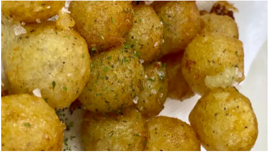

Crispy Potato Puffs

Description
This super crunchy twist on classic fries will certainly wow your guests and leave them wanting more.
Ingredients
- 2 large Idaho potatoes, boiled, skins removed
- 2 teaspoons kosher salt
- 2 teaspoons freshly ground black pepper
- 1 1/4 cups potato starch
- Vegetable oil, for frying
- Flaky sea salt, for garnish
- Dried parsley flakes, for garnish
Steps
- In a large bowl, mash the potatoes until completely smooth. Add the kosher salt, black pepper, and potato starch and mix until well-combined.
- Roll the potato mixture into ½-inch-wide balls.
- Fill a medium pot halfway with vegetable oil. Heat over medium heat until the temperature reaches 350°F (180°C).
- Working a few at a time, fry the potato balls in the hot oil until golden brown and crispy, about 4 minutes, stirring to prevent the balls from sticking together. Transfer to a paper towel-lined plate to drain and sprinkle with flaky salt and dried parsley.
- Serve immediately. Leftovers will keep in an airtight container in the refrigerator for up to 1 day. To reheat, air fry at 350°F (180°C) for 3–5 minutes, until warmed through.
- Enjoy!
Home